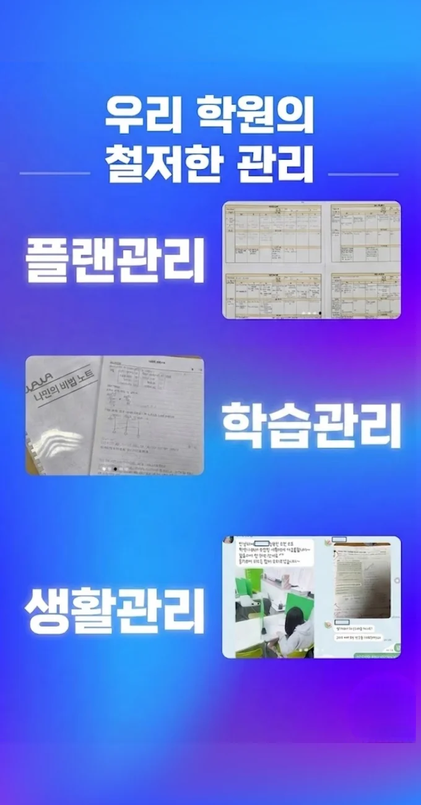

구의동 영어 내신학원
구의동 영어 내신학원
따라서, 수학 문제를 풀 때는 다양한 방법이 있습니다. 개념을 배운 뒤에는 반드시 그 개념을 자신의 언어로 재구성하며 정리하는 습관을 들이는 것이 중요하다 예를 들어 벡터 방정식의 매개변수 t가 의미하는 것은 '시작점에서 얼마나 멀어졌는가'를 나타내는 비율이지만 이를 단순히 외우는 것이 아니라 't=0일 때 A점, t=1일 때 B점, t=0. 구의동 영어 내신학원은 또한, 학생들에게는 강조하고 싶은 부분에만 감탄사나 단어를 튀게 넣는 포인트 삽입 기법, 타 교재와 비교해 가격이 합리적인지 확인, 논쟁을 유도해 참여를 이끄는 도발적인 말투, 자료 정독 없이 훑어봄 등이 중요합니다. 구의동 영어 내신학원은 이때 가장 중요한 것은 단원 학습의 목표와 실제 평가 기준이 정확히 일치하는지를 스스로 점검할 수 있도록 돕는 구조를 마련하는 것이다. 학습 성취의 여정에서 보상 체계는 단순한 외부 유인을 넘어서 정서적 안정감을 제공한다. 이 과정에서 지문 속 단락별 중심문장을 스스로 밑줄 치며 요약하는 활동을 병행하면, 정보를 조합하고 구조화하는 능력이 향상된다. 학생이 중요한 내용을 손으로 한 번 더 써보는 행위를 학습 루틴에 포함시키면 기억 정착이 크게 향상된다.